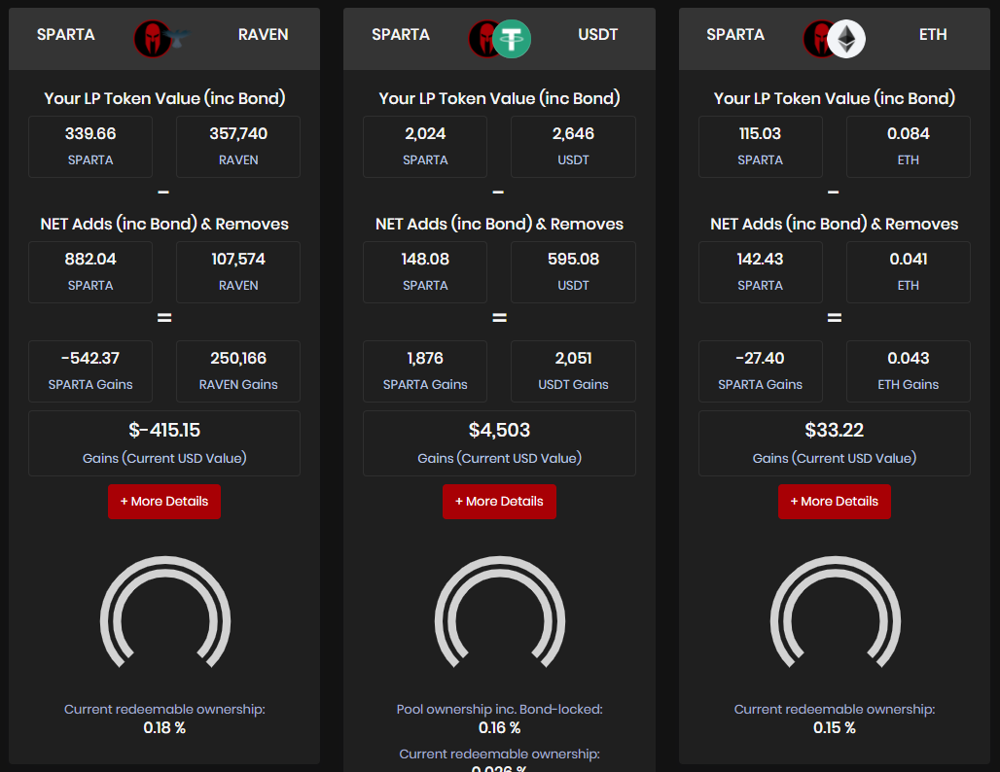

Spartan Protocol
Spartan Protocol enables users to create liquidity pools for BEP20 assets on Binance Smart
Chain.
The liquidity pools contain two assets each:
 Base asset (SPARTA)
Base asset (SPARTA)
Paired asset (BEP20)

As hinted in the SPARTA:BTCB example above; the assets held in the liquidity pools are driven to be
equal in USD value.
By pairing the BEP20 tokens with SPARTA we have a common asset to price all other assets in.
Therefore there is no reliance on external oracles to calculate the value of one asset against
another.
When someone swaps between two assets in a pool, they add one asset and remove the other at a rate
defined by how much of each asset exist in the pool.
In the next example you will see that the rate is almost 100,000 SPARTA. This means that there are
100,000 times more SPARTA than BTCB units in the pool.
To prevent manipulation, there is an algorithm which scales the rate exponentially when the trade
size is a larger portion of the overall pool's size.
Therefore pool manipulators pay very high fees (making the pools manipulation-resistant)
The difference between the spot rate and end-rate is called the 'slip fee'. This goes directly into
the pools to incentivize liquidity providers.
When users add SPARTA & BEP20 assets to the liquidity pools; they receive LP tokens in exchange. How LP tokens can be utilized:
Each LP token has redemption value calculated quite simply using the base asset (SPARTA). When you remove liquidity from a pool, you turn in the LP tokens and receive a calculated quantity of the relative BEP20 asset along with SPARTA. The calculation involves dividing the quantity of LP tokens being redeemed by the total amount in existence (this gives us the % of the pool represented by those LP tokens) Quite simply; you are entitled to get that percentage of the total assets in the pool upon redemption of those LP tokens.
At the time of writing this, there are two major methods driving incentives into the liquidity pools:
Pools that are in the 'Curated' list are eligible to receive SPARTA dividends from the ROUTER contract. The SPARTA dividends being injected into the pools will help offset some concerns that liquidity providers might have about impermanent loss and provide great benefit to liquidity providers. Read more about dividends here.
Every time someone places a swap trade using the pools, there is a slip-based fee calculated, then taken during the trade and sent directly to that pool's balance of held assets. These fees grow the total pooled asset balance and therefore the redemption value of each LP token in that pool.
LP Tokens can be staked in the DAO to provide the user with voting weight on proposals in the DAO. An important aspect of Spartan Protocol is it's community-programmable nature. The DAO will be able to control a significant amount of variables and functions and help shape the future of the protocol. DAO weight obtained from staking also enables the user to visit the DAO as often as they like to 'Harvest' SPARTA rewards directly to their wallet. More on the DAO here.
The current proposed 'Synths' implementation requires LP tokens to be used as collateral when minting synthetic assets.
The Spartan community are always working on documentation to make it easier for users to navigate the confusing land of DApps! The below is a quick summary of some of the guides already available relating the the use of the SpartanPools.
In-depth community-built guide for swapping in the SpartanPools: Click Here
In-depth community-built guide for managing assets in the SpartanPools: Click Here
Now that I have added liquidity and my assets are working hard to earn revenue from dividends and slip fees. What do I do next?
You are probably wondering how?
Contributors have finished delivering a first iteration of the ‘positions’ page so that users can easily see:
Using all that, you will be able to assess whether you are up or down in USD/unit terms. Users may opt to shift their liquidity to a higher-performing pool or play out whatever strategy makes sense based on the data they have.
Visit the V1 positions-page here: Click Here